PEPPERWOOD COMMUNITY NEWSLETTER
Information & Entertainment to build community unity

Be of Good Cheer
When all the stars are falling down, Into the sea and on the ground,And angry voices carry on the wind
A beam of light will fill your head, And you'll remember what's been said,By all the good men this world's ever known.
Moody Blues.
The media news is war, corruption, propaganda, fraud and infotainment.Meanwhile all the news from my friends are stories of getting the help needed, remission of terminal cancer, long awaited connection, and an overall shift in human consciousness from fear to love.
The Democrats won the mid-term election. However, IMO this corrupt system can’t keep up with the rate of the transformation we are experiencing. As a nation we are overdrawn financially, overextended militarily, controlled by the worst among us, spiritually bankrupt and indoctrinated to believe without evidence.
However as a people we are resilient and adaptive. We are social animals and tend to come together in crisis. I don’t want to impede the positive feeling of having won an election. I want to build on the idea that we the people are the power. Returning to our authenticity as individuals, our connection to community, setting aside our differences, working on common goals, supporting each other to step out of the stranglehold of fear and scarcity into the new freedom of trust and abundance.
It is not about changing jobs,though many may be lost. It is not enough to change your mind. It is an emotional, authentic change of heart that will turn the tide so that we can begin to join the earth as the human collective to regenerate the abundance of a mysterious and magical universe.
As children we knew magic. Least ye become as little children, ye shall not enter into the kingdom of heaven.

Coffee, Doughnuts, Coloring and Halloween
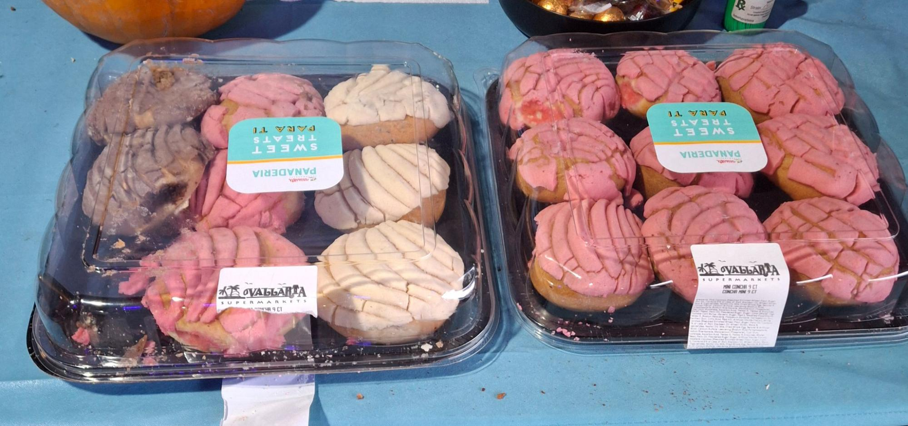
Ceasar won’t be able to come to the party tonight.
He gave us two trays of tasty pastries. And a case of water.
Here is Blake and Shannon coloring. Our 1st neighbor contribution!
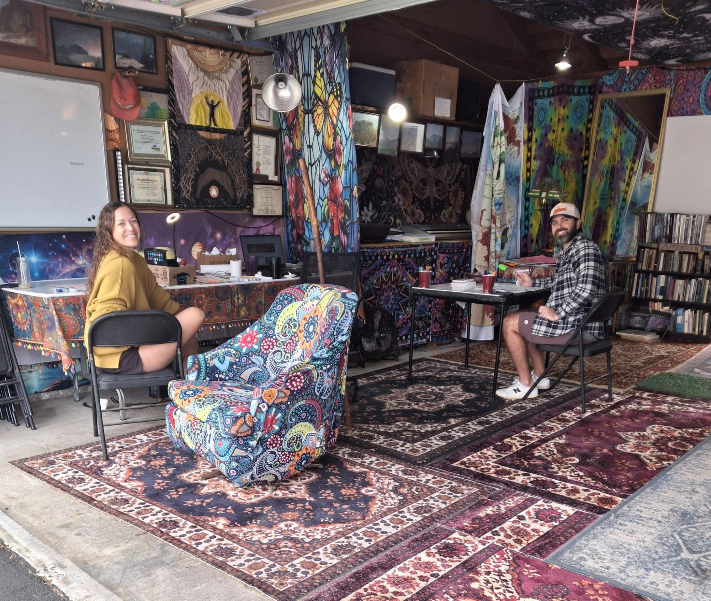
“We spent last Saturday morning at TC’s space, coloring the fun outlines and meaningful phrases he had printed for us. We talked about life, community, and the things we love to do. It was such a welcome change of pace to sit down, use our hands, and be creative while letting everything else quiet down for a bit. With no agenda, there was room for conversation and for us to enjoy each other’s company. It reminded me how something as simple as coloring together can create a little more connection in our neighborhood.”
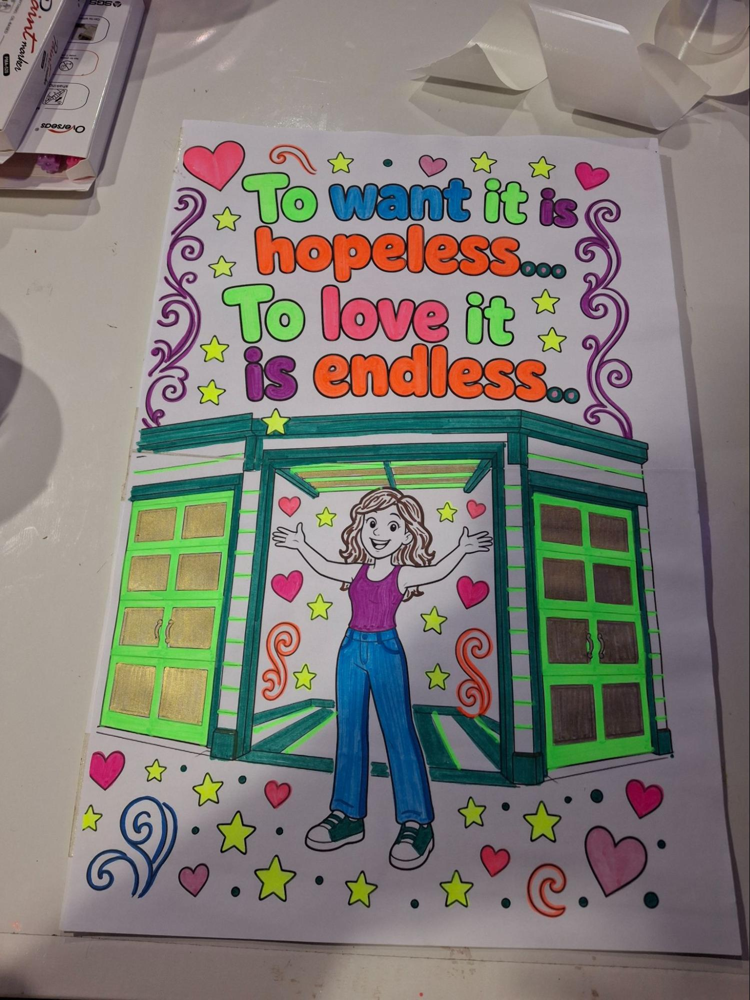
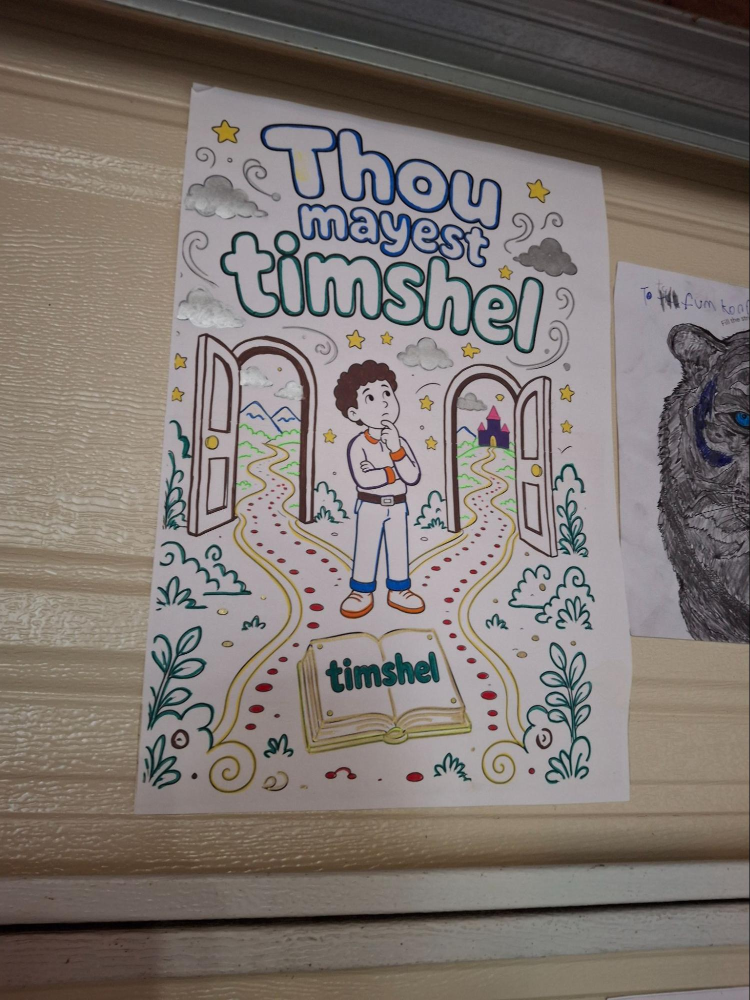
Thanks again for hosting us and we are excited for the upcoming Saturday morning coffee & convos!
All the best,
Shannon.
Thanks Shannon, you are a welcomed 1st adopter!
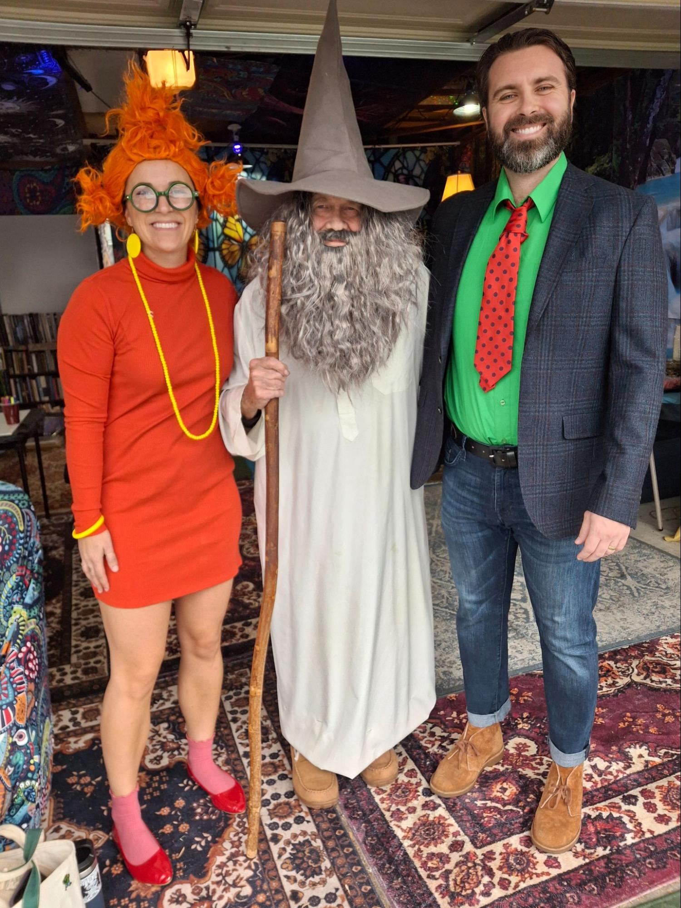
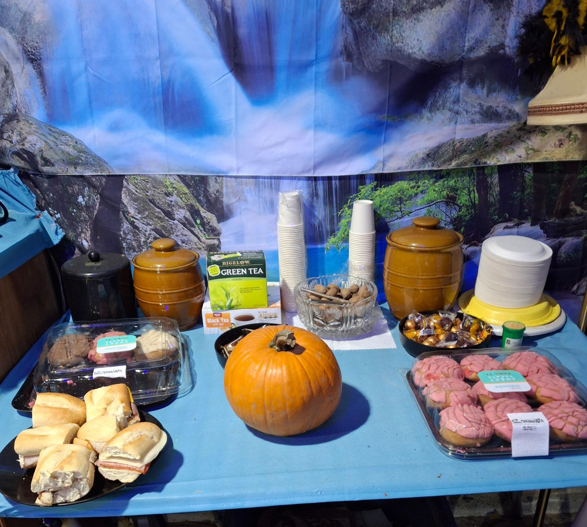
Here we are ready for the night of halloween.
It's raining. I gave up, closed the door, ate some of the food and went to sleep.
Mick showed up at 9 and the door was closed. I owe Mick an Amends. As a small act of service I will join him the next time he goes to work.
Blake wrote this haiku about the coloring day.
Halloween paint day
The ‘Who’ plays as good friends laugh
Time well spent with TC
I had to look up haiku. A haiku is a traditional form of Japanese poetry. It is typically written in three lines with a strict syllable pattern:
Thanks Blake, welcome 1st,1st adoptor!

Self-Government
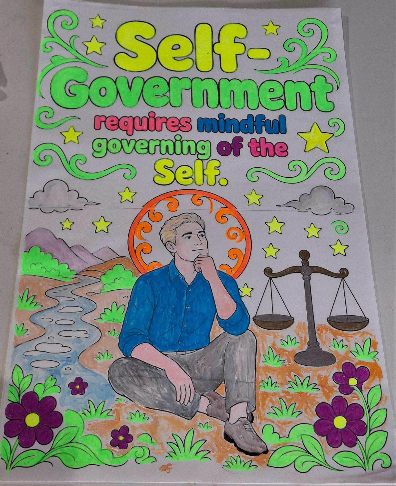
Self-government begins within. Before we can shape a community, a neighborhood, or a nation, we must first learn to govern the territory of our own mind and heart. Mindful governance of the self means noticing the impulses, fears, and habits that drive our choices, then choosing with intention rather than reacting on autopilot. When we pause long enough to ask what we truly value, we create the inner space where freedom becomes possible.
This kind of self-governance is not rigid self-control or endless self-criticism. It is the steady practice of paying attention to how we think, speak, and act, especially when no one is watching. The person who can sit with discomfort, balance competing desires, and return again and again to what matters is already practicing the same skills required for a healthy shared life. In that sense, every quiet decision to be honest with ourselves, to keep a promise we made only to ourselves, or to release a resentment is an act of citizenship. Self-government is not granted from outside. It is cultivated, day by day, through the mindful governing of the self.
Blue Ribbon Day
I had nightmares last night, I couldn't find my way home. At one part I was in a small boat in high surf. I capsized and lost everything. I forced myself out of bed, call my friend Sarah. She is transforming the Episcopal Church of Transfiguration! “Ironwood has become a congregation in Transformation”,posted Bishop RJ Ray. You can’t make this up. I absorbed her positive vibe as I worked toward therapeutic levels of vitamin C and VitaminT.
When I had my mojo on, I went to my/Our Space. Shannon stopped by going into work and shared her high positive vibe. I parked the truck outside and went in search of boxes to cut up. There were some big ones. I tried the quick change on my knife but had a malfunction. The operation was tenuous and I couldn't see clearly. I tried to understand it and make it so. It just wasn’t working. And then a peace fell on me and the blade just fell into place,
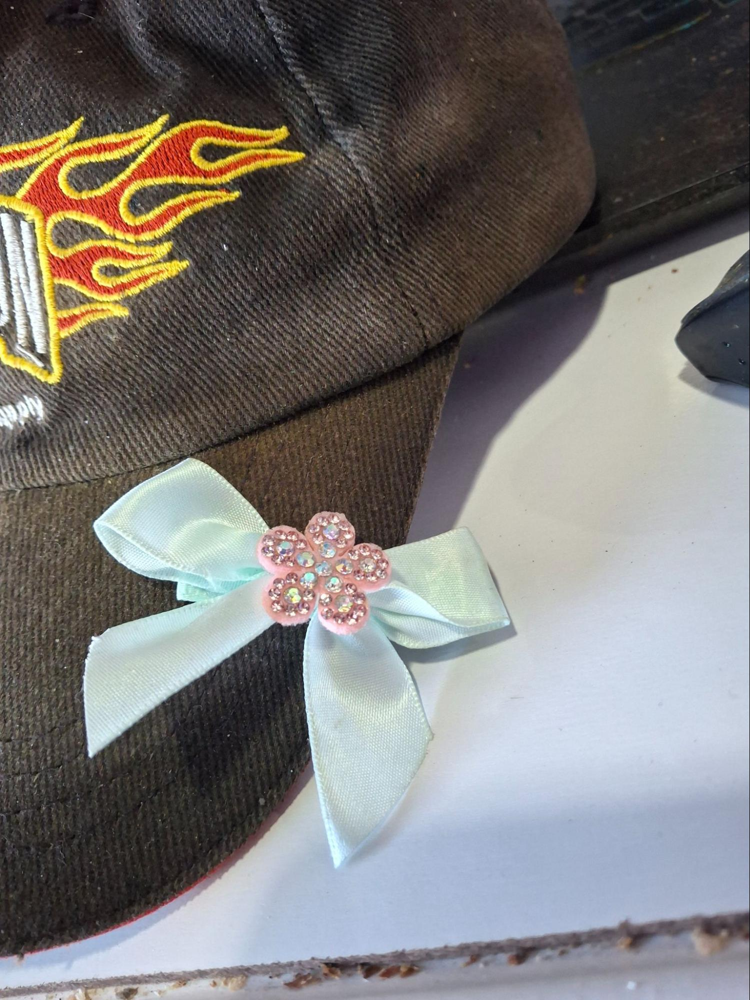
I wrote about Shannon’s contribution and Blake’s brilliant Haiku. I set off once again to cut up boxes and this time I knew a big one was full of smaller boxes. The big box was a five-ply cardboard, one that a child’s electric car came in. It felt good to stretch into the task. In the middle of cleaning up what goes in the dumpster there was a blue ribbon on the ground. I clipped on my hat like a gold star.
Now I see it out of the corner of my eye, reminding me how we can do what we love and serve the community.
Before boxes in boxes Before ¼ full After ¾ full
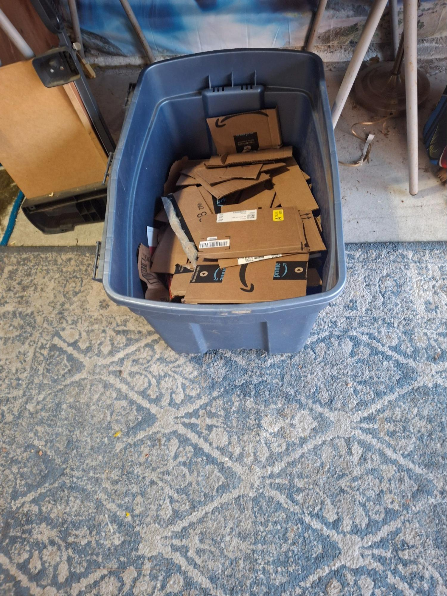
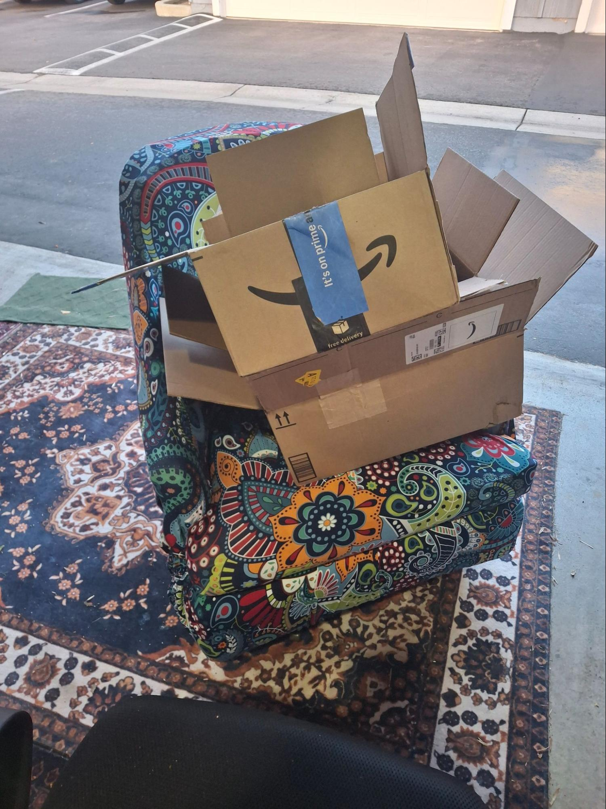
Blake brought me some boxes to get me out of my funk. How dare I waste time in a funk at my age?
.
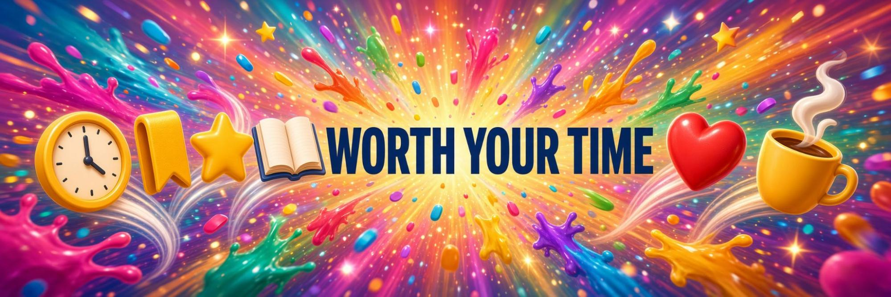
From the Age of Pisces To the Age of Aquarius
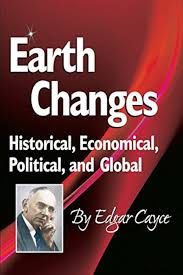
Edgar Cayce described the shift from the Piscean Age to the Aquarian Age as a gradual process rather than a sudden event. In his readings, the decades leading up to and around 1998 marked a significant phase of this transition, during which economic, political, and social structures would realign. He foresaw a “leveling” of extremes in wealth and power, greater recognition that each person is their “brother’s keeper,” and a move away from rigid materialism or purely institutional religion toward a more spiritually aware, whole-world consciousness. Periods of stress and unrest were expected as old power arrangements broke down, eventually giving way to forms of organization that better served the individual and the collective.
These ideas closely match classic astrological themes of the Age of Aquarius—an air-sign era associated with innovation, technology, humanitarian ideals, egalitarianism, global networks, and the dismantling of outdated hierarchies. Aquarius emphasizes mental and communicative interconnection, scientific progress, and a balance of individual freedom with collective well-being.
Current conditions illustrate this alignment in several ways. The internet, digital networks, and artificial intelligence have created an unprecedented global infrastructure for shared awareness and rapid communication, embodying the Aquarian “air” element of mind and connectivity. Economic globalization, along with ongoing challenges to concentrated political and corporate power, reflects the kind of realignment and leveling Cayce described. At the same time, widespread interest in personal spirituality outside traditional institutions, heightened recognition of global interdependence, and cultural emphasis on individual responsibility within larger systems mirror both his vision of rising consciousness and the Aquarian focus on progressive, networked, and more egalitarian ways of relating. Together, these developments indicate that the gradual transition Cayce associated with the Aquarian Age is underway.

What Takes Longer Takes Better
The vision of small, intentional mutual-aid communities linked in a vast, mycelium-like network of self-government—focused on the highest good of all—is not where we begin. Whether we can create a functioning system of interdependence remains unknown, but it starts with a few individuals in committed groups living the change we wish to see. The process follows the familiar arc of Forming (coming together), Storming (working through differences), Norming (creating a working structure), and Performing (taking action).
Moving from the dream state of magical thinking—that a corporate condominium complex of diverse individuals simply surviving late-stage capitalism and a failing empire could spontaneously become an intentional mutual-aid community—was waylaid by the reality of generational trauma and indoctrination that keeps us separated from one another and from our authentic selves.
My own denial, delusion, and compulsive behavior did not shield me from disappointment, or from the clear realization that this dream would require time, patience, persistence, and concerted effort. Yet the support of friends, the presence of nurturing allies, the positive waves and smiles of people passing by, the connection and feedback from one of the first like-minded contacts I had hoped to find, and a strong bond with a young skateboarder pulled me through. Today I am back to good cheer, spreading love and making friends.
Conclusion
What takes longer often takes better because real change cannot be rushed past the work of relationship, trust, and healing. The grand network we imagine will only grow from the small, committed groups willing to stay through the storms, refine their norms, and keep showing up for one another. Starting there—not with the finished vision, but with a few people choosing connection over separation—is how the mycelium begins.

Mercury and Venus Go Direct
Mercury stations direct on November 13, 2026; Venus stations direct on November 13–14, 2026
Mercury
- Direct: Friday, November 13, 2026, at about 15:55 UTC (roughly 10:55 AM ET / 7:55 AM PT).
- Position: ~5°02′ Scorpio.
- It was retrograde from October 24, 2026 (at ~21° Scorpio). The post-retrograde shadow period continues until about November 30.
Venus
- Direct: November 14, 2026, at about 00:21 UTC (which is still the evening of November 13 in US time zones, around 7:21 PM ET / 4:21 PM PT).
- Position: ~22°52′ Libra.
- It was retrograde from October 3, 2026 (starting at ~8°29′ Scorpio and backing into Libra). The post-retrograde shadow lasts until mid-December (around the 15th).
What going direct means
When a planet stations direct, it stops appearing to move backward and resumes forward motion. This is usually interpreted as the review phase ending and clarity or momentum gradually returning:
- Conversations, decisions, and plans that felt stalled or confusing can become clearer and easier to move on (Mercury).
- Relationship dynamics, values, attractions, and money matters that were under reassessment can begin progressing again (Venus).
- Because both station within hours of each other (Mercury in the morning of Nov 13 in many time zones, Venus later that day/evening), the symbolism is often described as mind and heart (or thinking and valuing) realigning around the same time—an unusual dual turning point.
It is not an instant “everything is fixed” switch. Stations are turning points; effects of the retrograde and the post-shadow periods tend to linger as things settle (Mercury’s shadow through about Nov 30; Venus’s through mid-December). Many sources describe the second half of November as a gradual shift from reflection toward clearer communication, renegotiation, and forward steps in relationships or values-related areas.
In short: the mid-November stations mark the end of a period of looking back and reviewing (especially communication + relationships/values), with the invitation to start integrating what was learned and moving ahead more deliberately. How it lands personally depends on your birth chart and the houses involved
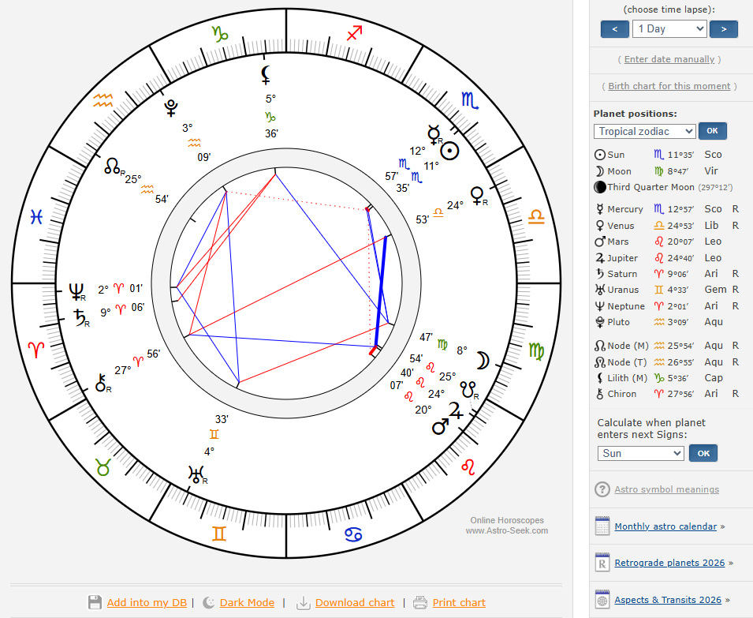

Cleaning Up The Mess
I shoot from the hip and clean up the mess. Meaning I act spontaneously from inspiration, or I am responding or reacting to the next designated thing. Then when the acting stage ends I assess what happened; what is good I anchor and what didn’t work I clean up and get rid of it.
I like hanging out in the space I decorated. It feels like camping. I have to let go of my idea that I have created a space for community. But I don’t have to let go of mutual aid. When I was creating a place to gather I really enjoyed cutting up the boxes,
I appreciate the friends I have made and all the smiles and waves I get from passers by. This is a good and safe community as is. Everyone is busy. Most seem happy. They all wave eventually.
This week we had the 1st contributions to the newsletter. Konrad says he knows the neighborhood and would show me. Maybe a cub reporter? I am becoming acutely aware of what Mick does managing the waste management. I have adopted cutting up the boxes at my dumpster, I owe Mick an amends and when I learn more we might start an adopt a dumpster program.
Me thinks me thinks too much. So enjoy your week, be of good cheer, spread good vibes, and be a friend,